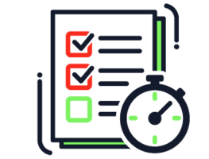
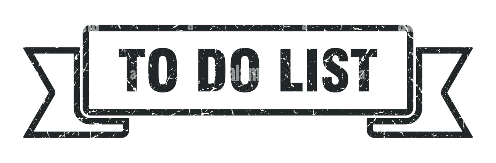

- Tuliskan text pada kolom input dan tekan tombol "Add Item" untuk menyimpan text pada list
- Klik pada text yang telah tersimpan untuk memberikan tanda "Strikethrough" (Coret) sebagai tanda untuk list yang sudah diselesaikan
- Klik pada icon Ricycle Bin untuk menghapus list secara individu
- Klik pada tombol Clear All untuk menghapus semua list yang ada